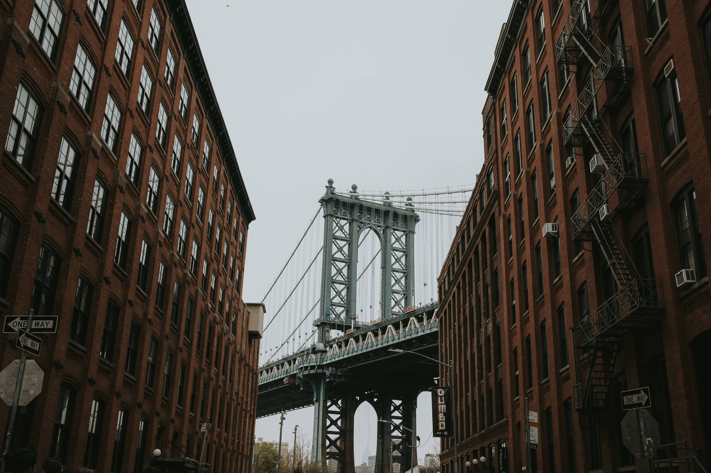

<h2 class="title">Galería</h2>
<div class="container">

<div class="buttons">
    <button mat-button color="accent" type="button" [disabled]="isFirst()" (click)="onBefore()">Anterior</button>
    <button mat-button color="accent" type="button" [disabled]="isLast()" (click)="onNext()">Siguiente</button>
    <button mat-button color="primary" type="button" (click)="onIncrease()">Aumentar</button>
    <button mat-button color="primary" type="button" (click)="onDecrease()">Disminuir</button>
    <button *ngIf="!showStop" mat-button color="warn" type="button" (click)="onPlay()">Play</button>
    <button *ngIf="showStop" mat-button color="warn" type="button" (click)="onStop()">Stop</button>
</div>
<div class="images-list">
<p (click)="previousPage()">Anterior</p>

<p (click)="nextPage()">Siguiente</p>
</div>
</div>

<div class="container-rotate">
<h2>Rotar imagen</h2>
<div class="rotate-elements">

<p style="width: fit-content;" rotate="45" step="15">Prueba texto a rotar</p>
</div>
</div>
